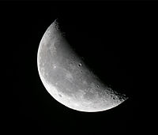

Луната на 8/1
Последна четвърт
Предстоящи метеорни потоци
Космическо изображение на деня
NGC 1365: Majestic Island Universe
Кликнете на изображението за да го разгледате в пълна резолюция.

©island universe
Международната космическа станция в момента:
Орбитална скорост: 7706,6 m/s (27 743,8 km/h)
Орбитален период: 91,34 минути
Координати:
161.0368
-43.2067

Екипаж в момента:
Sergey Ryzhikov
Kate Rubins
Sergey Kud-Sverchkov
Mike Hopkins
Victor Glover
Shannon Walker
Soichi Noguchi